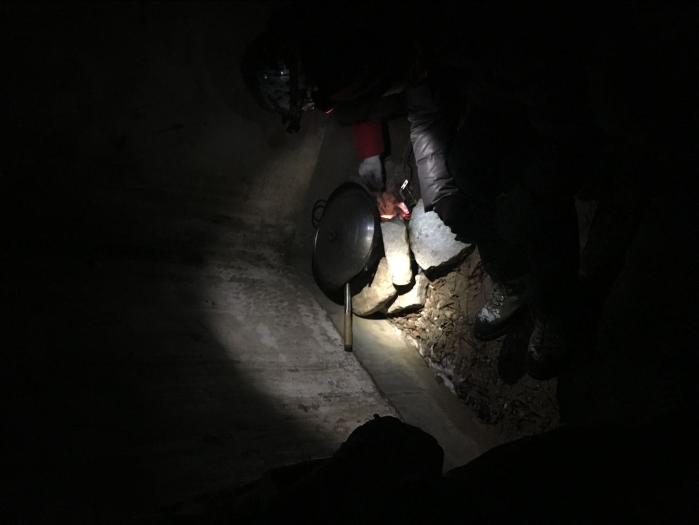

发信人: WiniM(WiniM), 信区: outdoor
标 题: 转眼就过去了的2016
发信站: 饮水思源 (2016年12月31日23:42:07 星期六)
记得2015年12月31日，跨年夜，在北京桃源仙谷整理装备时，2016年悄无声息地到来了。
没有倒计时，也没有欢呼声，只是发现了新年来临的一刹那，稍微感叹了一句，啊，又过
去一年了
这几天准备期末考，突然发现又一年过去了。回想起2016，印象中就只有太白上一队人在
默默地赶路，偶尔欢声笑语；北京的冰雪中一队人在捡柴，生火，等着锅里的牛肉；不知
道哪座山上，也不知道是谁，在吼人；物理楼里挥汗如雨，不知不觉一年爬了几百趟物理
楼。想起每一件事情都仿佛很久远，哪怕是昨晚刚爬完的物理楼，然而想想2016年已经要
过去，仿佛很不可思议。
想想自己2016年干了些什么呢……就是莫名其妙地脱离了单身狗的队伍？出了近十条线？
攀了几次冰？偶尔去去岩馆？接任了野协技术部部长？添置了一些装备？想想还是蛮精彩
的嘛。。。
2016年拍的第一张照片，恍如昨日
screen.width - 200){this.width = screen.width - 200}">
元旦，巅峰户外运动学校，我们初级班被分到了牛逼峡谷（对，人家就叫NB峡谷）。在此
之前只去过一次冬训而且攀冰只攀了两趟的我……爬了三天觉得学到的东西真的非常非常
多，这是在我后来带冬训的时候才认真思考过得出的结论。
screen.width - 200){this.width = screen.width - 200}">
冬训第一批。天仙瀑。冻成了傻逼。那时候的衣服是按大一时冬训(一点都不冷)带的，穿
了速干抓绒软壳毛猴还有一件羽绒服之后，再穿了小蚊子的棉服TAT。。。直接把那件L码
的棉服给撑圆了，都还是觉得冷
冰壁很赞是真的
screen.width - 200){this.width = screen.width - 200}">
第一次这么生火做饭。柴都是我们在天仙瀑回营地的路上捡的。直接在冰壁敲冰，装在zz
m的包里带回营地，敲下来的冰把B75装满……就我在使劲装，根本没考虑重量，感谢zzm的
不杀之恩
 screen.width - 200){this.width = screen.width - 200}">
冻成固体的鸡蛋！重点应该是后面hemind的眼神哈哈哈哈哈哈
screen.width - 200){this.width = screen.width - 200}">
之后就是北京冬训的欢乐的时光~桃源仙谷真的比天仙瀑暖和多了啊啊啊啊啊
screen.width - 200){this.width = screen.width - 200}">
冬训回密云之后~~~基情满满之一 ——
screen.width - 200){this.width = screen.width - 200}">
双桥沟攀冰~~~基情满满之二 ——（还是那两个人哦）
screen.width - 200){this.width = screen.width - 200}">
在沟里攀冰，五天，确实是很不错的体验，每天都能爬不同的冰壁。。。从不停地刷线，
到模拟建站，然后还有每天要徒步半小时才能到冰壁，到黄白龙之前还找错路了，要速降
下去，结果抽绳子抽到最后发现，尼玛，绳子在树桩上打结了！绝望……从此对双绳降后
的抽绳产生了心理阴影
screen.width - 200){this.width = screen.width - 200}">
screen.width - 200){this.width = screen.width - 200}">
在攀冰之后就是回上海，然后就开始了日常的画风，一直在出线。。。
记得大一开始，就基本上每条线都会出，然后后来无意中立了个逢线必出的flag。。。
数了一下16年出过的线吧
最开始是三月份的龙须山，女神当领队不能不去呀~
只记得那条线挺热的，在营地连抓绒都没穿
后来到营地很早，很多人冲顶去了，hemind和zzm和小猴子抱石去了，屁股貌似有点拉伤的
我……默默在营地煎小香肠
嗯找不到照片= =
然后三月份听说复旦开千八，在清明，我想去很久了，碍于小队伍车费太贵，又找不到合
适的时间和人，就一直拖着没有去。这是一次很好的机会，于是就去跟旦旦走了一发。。
。也算是意识到各社团直接的差距吧，无论是纪律，户外的一些意识，安全相关的东西，
对自己体能和线路难度强度的评估，还有腐败的问题。让我知道了在协会应该注意哪些地
方，才不会把一个协会推向旦旦的那种画风。这算是对户外思考最深的一条线。
screen.width - 200){this.width = screen.width - 200}">
之后是五一的七尖。别问我为什么到大二下学期了还没去过浙东…………一直很想去，但
是每年的五一十一都走七尖去了哇…………终于走完了七尖很开心
screen.width - 200){this.width = screen.width - 200}">
再之后就是观音尖探路兼领队培训了。同时也是雪山队的负重拉练线路。身在雪山队，同
时又作为探路队伍的老人之一，让我有些许事情顾不上，做得有那么点糟糕。观音尖出现
的意外应该大家都知道的。后来对户外安全问题有了很深的反思，尽在检讨里面……
screen.width - 200){this.width = screen.width - 200}">
探路结束，大概就是一直在准备雪山的事情了。苦逼的我在登山前得了肺炎，没能上山。
不过最近带冬训觉得技术教得得心应手，也感谢登山队的培训吧~
登山队的七尖轻装拉练……怎么又是七尖= =
screen.width - 200){this.width = screen.width - 200}">
还是很喜欢七尖的这片草地的……
喜欢的景和喜欢的人(≧ω≦)
screen.width - 200){this.width = screen.width - 200}">
后来在成都……zzm hemind 小蚊子三个啊~~~协会画风如此多亏他们带的技……术…… 嗯
screen.width - 200){this.width = screen.width - 200}">
得知自己没能登山之后，就在安心准备着十一的太白，这也是我第一次当领队。这次提前
了两个月就确定了人员，各种安排都比较早（除了坑爹的跟西交的联系，靠）。线路准备
的自认为足够了。非常给力的天气，还有非常给力的、在山上突然发现无比合拍的压队zy
f，让我们这次几乎按照原计划，安全走完大北南穿越，是我觉得最成功的一次了吧。
想起自己出过的线，第一个想起的都是一望无际的跑马梁，还有太白山上时而严肃时而欢
乐的这支队伍。想想如果什么时候能走鳌太，那是再好不过的。
screen.width - 200){this.width = screen.width - 200}">
screen.width - 200){this.width = screen.width - 200}">
十一之后就在准备破冰线了。跟czh商量后定了观音尖。czh当领队让我觉得特别的稳，作
为走过观音尖的我，当斥候还是挺轻松的一件事。第一次带着大姨妈走线让我觉得很崩溃
……
screen.width - 200){this.width = screen.width - 200}">
四周之后，第一次当会员线领队，还是找的zyf当压队……然而太白上特别靠谱的压队就变
成了啥事都不管的压队。。。跟君姐在一起得知了zyf的正确打开方式：zyf，打水！zyf，
端锅！在山上笑死我了哈哈哈哈哈
这也是近两年来括苍山第一次不坐大巴下山吧…………感谢zhouzihao给我的括苍山的资料
，时隔两年信息仍然很全，多么靠谱的一个领队啊~
说是大水线，个人认为也没有那么的水。。。可能跟男女比例2:3有关系吧
看，好多妹子~~~

后来就是冬训线了。本来想着有机会走一下昱岭关，后来变成了三尖……尼玛又是斥候。
不过这次三尖真的特别特别棒！景色很美丽，队伍很给力，赞！
screen.width - 200){this.width = screen.width - 200}">
screen.width - 200){this.width = screen.width - 200}">
到了冬天，又是一年冬训时……
screen.width - 200){this.width = screen.width - 200}">
screen.width - 200){this.width = screen.width - 200}">
screen.width - 200){this.width = screen.width - 200}">
screen.width - 200){this.width = screen.width - 200}">
（爱我你怕了吗）
screen.width - 200){this.width = screen.width - 200}">
12月24，第一批练先锋啦
screen.width - 200){this.width = screen.width - 200}">
年终大会时，带冬训的成员是临时组建起来的技术部嘛~~~给技术部每个人发了个mammut小
象

壮哉我大技术部
screen.width - 200){this.width = screen.width - 200}">

年终大会之后聚餐。会长光环啊~~
screen.width - 200){this.width = screen.width - 200}">
啊，发图没发爽。。最后是继续今年年初发过的坚持不虐狗系列 screen.width - 200){this.width = screen.width - 200}">
screen.width - 200){this.width = screen.width - 200}">
screen.width - 200){this.width = screen.width - 200}">
--
行诸山野 立命天地
※ 来源:·饮水思源 bbs.sjtu.edu.cn·[FROM: 211.80.54.209]
|